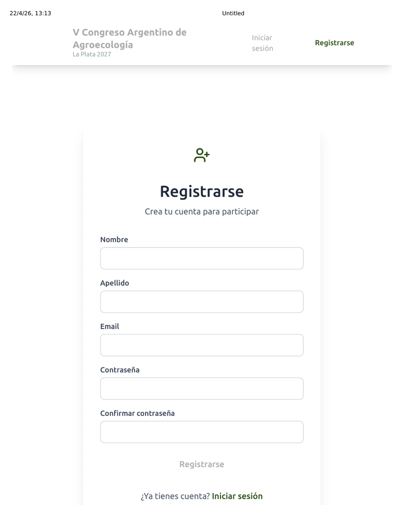
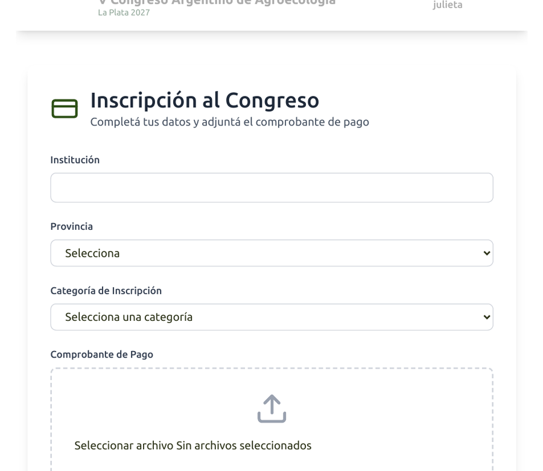
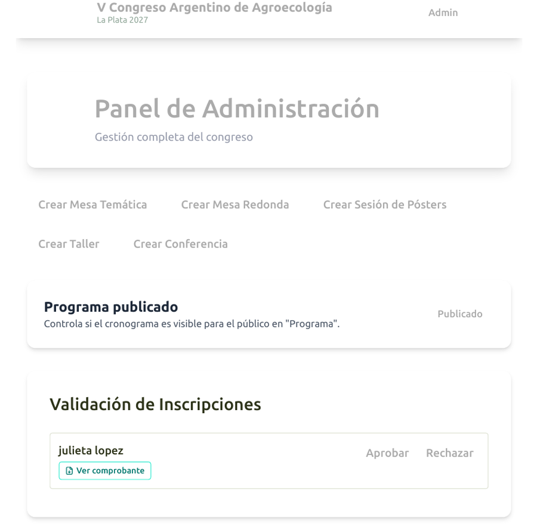
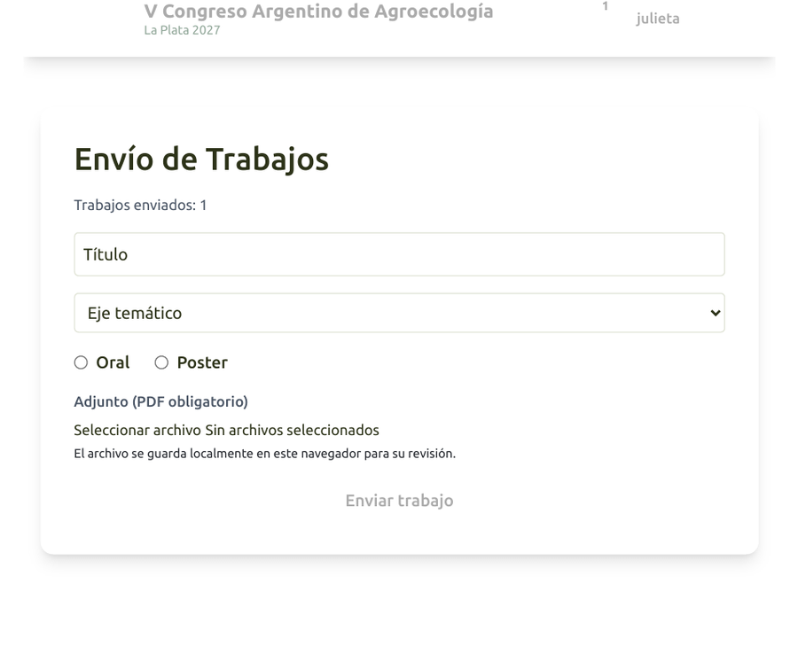
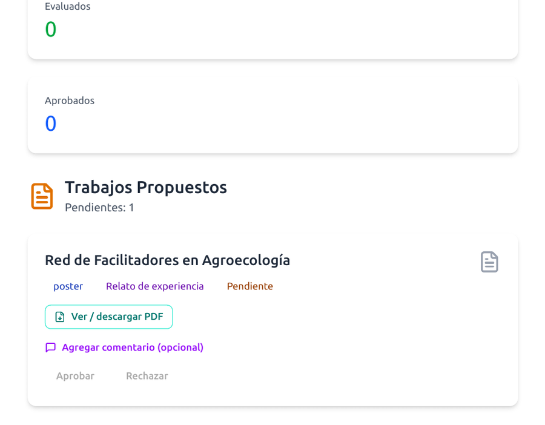
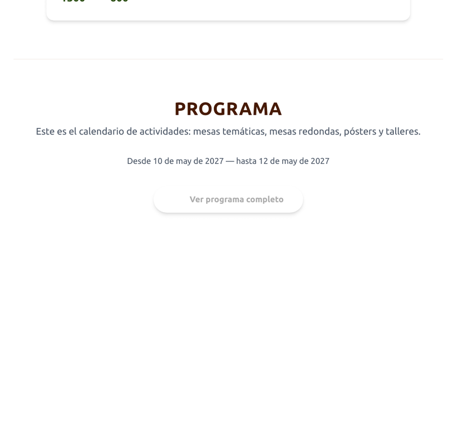
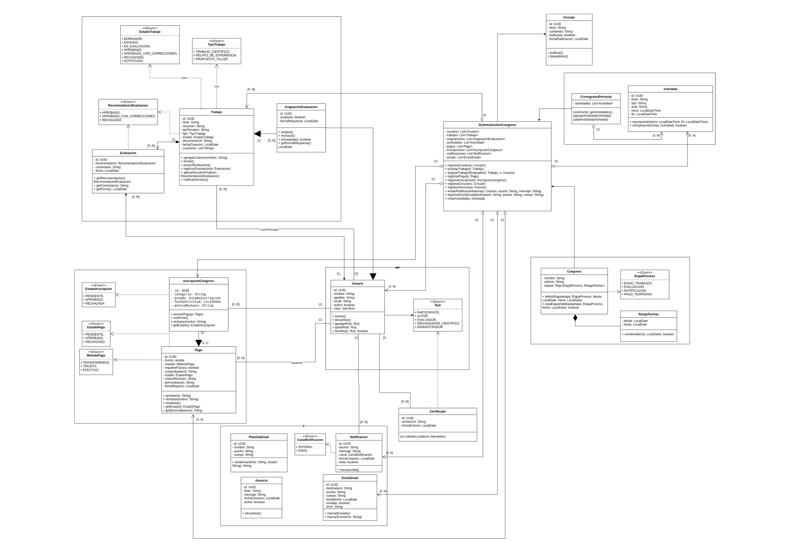

Trabajo Final Integrador — Grupo 1
De la maqueta al sistema desplegado: seis entregas, una aplicación en producción.
Qué congreso hay que gestionar, cómo nos acercamos y para quién construimos.
El V Congreso Argentino de Agroecología (FCAyF–UNLP) reúne durante varios días a cientos de personas: docentes, productores, estudiantes y organizaciones. Hoy eso se coordina con planillas, mails y formularios sueltos.
Categorías con aranceles distintos, transferencia o efectivo, comprobantes, recibos y facturas.
Resúmenes por eje temático, revisión por pares a ciegas, dictámenes, desempates y devoluciones.
Mesas, pósters, talleres y conferencias en aulas con cupo y franjas horarias que no pueden solaparse.
Circulares, avisos por etapa y recordatorios: hoy, listas de correo copiadas a mano.
Asistencia, presentación y evaluación. Al cierre, cada persona debe poder descargar lo suyo.
Datos duplicados, plazos que se pasan, trabajos sin evaluador y certificados armados uno por uno.
Salieron de las tareas que hoy se hacen a mano: de ahí definimos roles y armamos la solución por épicas (módulos) e historias de usuario.
| Rol | Qué hace en el sistema | Por qué le importa |
|---|---|---|
| Asistente | Se crea una cuenta e inicia sesión · se inscribe al congreso y completa sus datos · paga la inscripción (transferencia o efectivo) y sube el comprobante · consulta si su pago fue aprobado · arma su agenda personal del congreso sin chocar horarios · puede proponer un taller · descarga su certificado cuando el congreso termina. | Sabe en todo momento si su inscripción está bien, sin mandar mails para preguntar. |
| Autor | Además de lo del asistente: carga un trabajo (artículo o relato) con coautores y eje temático · sube el PDF · lo guarda como borrador o lo envía a evaluación · ve en qué estado está y lee la devolución · cuando lo aceptan, ve cuándo y dónde presenta. | Sigue su trabajo de punta a punta y recibe la devolución sin intermediarios. |
| Evaluador | Recibe trabajos de su eje temático · acepta o rechaza la asignación · lee el PDF · da su dictamen (aceptar, rechazar u observaciones) · puede adjuntar una corrección · no evalúa trabajos propios. | Solo recibe trabajos de su especialidad, con un cupo claro y sin conflicto de interés. |
| Comité académico (organizador científico) |
Hace la prevalidación de los trabajos (revisión inicial antes de asignar evaluadores) · asigna evaluadores por eje temático respetando cupos · resuelve empates y reenvíos · aprueba solicitudes de nuevos evaluadores · configura ejes, modalidades y plazos de envío · consulta estadísticas del proceso académico. | Es el adoptante principal: hoy hace todo esto a mano. |
| Administración | Da de alta y gestiona usuarios · define aranceles (cuánto paga cada categoría de inscripción) · valida pagos, emite recibos/facturas y hace el arqueo de caja (control de lo cobrado en el día) · carga aulas, horarios y el programa del congreso · publica circulares y avisos · cierra el congreso y habilita certificados · ve reportes y pendientes de organización. | Centraliza la operación del evento y el control del dinero. |
| Público | Sin cuenta puede ver la información general, el programa publicado, las circulares, la historia del congreso y el mapa/sede · desde ahí puede registrarse o iniciar sesión. | Es la cara visible del congreso: informarse sin barreras. |
Qué objetivo tuvo cada etapa, qué conceptos de la cátedra aplicamos, con qué nos peleamos y qué quedó funcionando.
Informe de análisis + PDF de maquetado (prototipo React)
Diagrama de clases + POJOs: clases Java simples del dominio (Usuario, Trabajo…)
entrega-3JPA + DAO + MySQL (motor de BD). Primer REST con Jersey aún mezclando capas
entrega-4API con capas limpias: Jersey + CDI + JWT + Swagger
entrega-5SPA Angular: pantallas que hablan con esa API
Todo junto, desplegado y usable de punta a punta
Cada entrega vivió en su propia rama (entrega-3, entrega-4, entrega-5) y se
integró a main sólo con el pipeline en verde. Nunca perdimos una entrega ya aprobada por trabajar sobre la siguiente.
Entender el dominio del V Congreso y acordar qué construir, con pantallas discutibles. Relevamiento → roles → iniciativa → épicas → HU → prototipo cliente–servidor (aún sin CDI).
Salen del informe Análisis del Problema Sobre el V Congreso (épicas 1–5).
Al maquetar aparecieron reglas que no estaban escritas: ¿qué pasa si dos evaluadores empatan?, ¿puede un evaluador revisar su propio trabajo?
Cómo la resolvimos: las anotamos en el análisis / HU y las llevamos al modelo de la Entrega 2.
② Maquetado: archivo_maquetado.pdf — capturas del prototipo React + Vite (localStorage, sin backend). Siguiente diapositiva: pantallas ligadas a esas HU.






Prototipo sin backend: validar el flujo de las HU antes de modelar en Java.
Diseñamos el congreso como objetos Java del negocio (POJOs): cada cosa importante es una clase con datos, estado y relaciones. Ese diseño no guarda nada en MySQL todavía — solo dice qué existe.
Trabajo
titulo, resumen, estado, PDF… métodos como enviar().
AsignacionEvaluacion
¿este evaluador aceptó revisar este trabajo?
Evaluacion
el dictamen: aprobar / rechazar + comentario.
Lo mismo para Usuario, Pago, InscripcionCongreso, Actividad…
Más adelante mostramos ese diseño en el diagrama completo.
Cuando el servidor se apaga, esos objetos en memoria se pierden.
Hace falta persistencia: copiar cada objeto a una fila de MySQL y volver a armarlo después.
Pregunta de diseño: ¿quién se ocupa de guardar y buscar?
Si lo metemos en Trabajo o en el servlet, mezclamos el negocio con MySQL.
Por eso elegimos el patrón DAO: una responsabilidad aparte (acceso a datos de una entidad). Siguiente: por qué ese camino.
El modelo de objetos ya estaba partido en entidades claras (Usuario, Trabajo…).
Eso nos empujó a un camino simple: una entidad del diagrama → una tabla → un DAO.
Meter SQL / EntityManager adentro de Usuario o del servlet:
Usuario sabría de MySQL → si cambia la BD, tocás el negocio.persist / find se copia en 10 pantallas.Mezcla dos trabajos: “reglas del congreso” + “hablar con MySQL”.
DAO = Data Access Object: es un patrón de diseño (no “magia de JPA”). En el código es una clase —o interfaz + implementación— cuya única responsabilidad es el acceso a datos de una entidad: guardar / buscar / actualizar / borrar.
Usuario = datos y reglas del usuario (modelo E2).UsuarioDAO + UsuarioDAOImpl = cómo entra y sale de MySQL (E3).@Entity, EntityManager) = la herramienta que usa el DAO para mapear objeto ↔ fila.Por eso el modelo nos llevó a DAOs: ya teníamos objetos bien cortados; el DAO es el “portero” de cada uno hacia la base, sin ensuciar el diagrama de negocio.
HU → clase del diagrama → POJO → entidad JPA → tabla MySQL → DAO (CRUD de esa entidad) → Factory (un solo lugar crea el DAO) → en E4, CDI inyecta esas dependencias.

Rueda = zoom · arrastrar = mover · cada caja de acá, en E3, tiene (casi) su DAO.
En el PDF: acercá esta página con el zoom del lector para leer clases, atributos y relaciones.
Cuando hagan zoom en el diagrama, piensen esto: cada clase con id es candidata a tabla y a DAO.
| En el modelo (E2) | En la persistencia (E3) | Quién lo hace |
|---|---|---|
Usuario | tabla usuario | UsuarioDAO |
Trabajo | tabla trabajo | TrabajoDAO |
Pago | tabla pago | PagoDAO |
AsignacionEvaluacion | su tabla | AsignacionEvaluacionDAO |
Evaluacion | su tabla | EvaluacionDAO |
| CRUD repetido (save/find/delete) | código compartido | GenericDAO / AbstractJpaDAO |
| “¿quién me da el DAO?” | un solo lugar de creación | DAOFactory (Factory) |
Nuestro diseño de objetos partió el dominio en entidades.
Eso hizo natural el patrón DAO: cada entidad se persiste por su cuenta, sin meter MySQL dentro de las clases del negocio.
JPA convierte el objeto en una fila de la tabla (y al revés).
El DAO es quien pide ese guardar/buscar.
El Factory es el único lugar que crea los DAOs: el resto del sistema no tiene que hacer new UsuarioDAOImpl() en cada pantalla.
entrega-3Tomar el modelo de la Entrega 2 y hacer que sobreviva al reinicio en MySQL (jyaa2026_bd1): mismas clases → tablas; mismas relaciones → FK.
JPA/Hibernate: cada POJO con id → @Entity.
Patrón DAO: un DAO por entidad (UsuarioDAO, TrabajoDAO…) sobre
GenericDAO → AbstractJpaDAO.
DAOFactory: punto único para pedir DAOs (aún sin CDI).
Arranque con ServletContextListener. ABM en /test-persistencia.
Empezamos a exponer una API con JAX-RS / Jersey, pero los recursos instanciaban los DAOs a mano
(DAOFactory / new). Eso mezclaba capas: la capa web hablaba directo con la persistencia, sin servicios ni CDI.
① Listar entidades a mano en persistence.xml (Tomcat no escanea como un servidor Jakarta EE completo).
② PDFs: pasar el @Lob a LONGBLOB.
③ Migraciones propias (SchemaMigration) porque hbm2ddl no alcanza.
④ La mezcla de capas funcionaba, pero no escalaba: era el problema que resolvimos en la Entrega 4.
/test-persistencia o tablas en phpMyAdmin.
Guardar como img/e3-persistencia.png.
entrega-3: la base queda en MySQL; el REST todavía sin capas limpias.entrega-4Aplicar SOLID, sobre todo el DIP: el alto nivel depende de abstracciones. Eso se concreta con CDI (@Inject): dejamos de crear DAOs a mano y separamos Resource → Service → DAO.
En E3 el patrón creacional era DAOFactory. Acá el contenedor CDI / Weld reemplaza ese new:
Resource → Service → DAO, con EntityManagerProducer (@Produces / @Disposes) por request.
SRP: el Resource no hace SQL; el DAO no arma JSON.
Jersey arma las URLs de la API · DTOs (no devolvemos entidades JPA crudas) · JWT para el login · filtros CORS · Swagger/OpenAPI para documentar y probar · ExceptionMappers.
Hacer convivir Jersey + CDI en Tomcat: sin jersey-cdi1x-servlet / jersey-hk2 y beans.xml,
las inyecciones llegaban en null.
Cómo lo resolvimos: el contenedor CDI crea e inyecta; nosotros dejamos de instanciar a mano.
POST /api/login.
Guardar como img/e4-swagger.png.
entrega-4: la API queda en capas, documentada y usable por el front.HttpSessionPOST /api/login devuelve un JWT firmado con HS256, válido 4 horas.Authorization: Bearer … en cada pedido.JwtAuthFilter lo valida y arma un AuthenticatedUser para el recurso.health, programa, circulares y OpenAPI.sessionStorage + cierre por inactividad a los 30 minutos.Un token es una foto del momento en que se emitió. Si el administrador te quita un rol o te inhabilita la cuenta, el token viejo seguiría siendo válido durante horas.
Nuestra solución: el filtro valida la firma del token, pero vuelve a leer roles y estado activo desde la base en cada request. Así, inhabilitar una cuenta la expulsa al instante, sin esperar el vencimiento.
Por qué JWT y no HttpSession: la API tiene que poder servir a un cliente Angular alojado en otro origen y a
un backend replicado en contenedores. Sin estado en el servidor, el escalado y el CORS se simplifican.
entrega-5Reemplazar el prototipo de la Entrega 1 (datos en el navegador) por un cliente real que consuma la API de la Entrega 4 y respete los permisos de cada rol.
SPA Angular = pantallas en el navegador que piden datos al servidor por la API.
Componentes standalone, rutas, guards por rol, interceptor JWT, formularios reactivos, HttpClient.
Angular 19, RxJS, Leaflet (mapa), proxy de desarrollo hacia el servidor de la cátedra.
① CORS (proxy + filtros en el backend).
② inject() mal usado en ngOnInit (NG0203).
③ Bundle que superaba el presupuesto del build.
④ Mapa Leaflet que parpadeaba al recrearse.
/api/... + Authorization.
Guardar como img/e5-angular.png.
entrega-5: la vista habla con la API en capas de la Entrega 4.Cerrar el ciclo completo — de la inscripción al certificado — y dejarlo desplegado y usable por los organizadores.
Aranceles configurables por categoría con QR · recibo de caja correlativo y arqueo diario · factura al participante · cupos de evaluador por eje con liberación automática · desempate 1–1 que dispara un tercer evaluador · catálogos editables por el comité · programa con aulas georreferenciadas y control de cupo · circulares y notificaciones por plantilla (in-app + email) · checklist pre-congreso · cierre del congreso que emite los certificados.
Un Dockerfile multi-stage compila Angular, lo copia dentro de src/main/webapp, empaqueta el WAR con Maven y lo despliega en Tomcat 10 / JDK 21.
Frontend y API terminan en el mismo origen: en producción ya no hace falta CORS.
El contenedor a veces se desplegaba con un frontend viejo por la caché de Docker.
Cómo la resolvimos: build con --no-cache --pull y, sobre todo, pasos de verificación dentro del propio Dockerfile: si el WAR no contiene el
main-*.js y los estilos esperados, la imagen no se construye. El error se detecta en el pipeline, no en la demo.
grupo1.jyaa-ci.linti.unlp.edu.ar o el programa del congreso con el mapa de aulas.
Guardar como img/e6-produccion.png.
main lo reconstruye.Primero persistimos y hablamos a los DAOs desde el REST (capas mezcladas). En la Entrega 4 separamos con CDI. Hoy quedó así:
new DAO| Teoría | Dónde vive en el proyecto |
|---|---|
| Arquitectura server-side y Servlets | PersistenciaTestServlet · web.xml · WAR en Tomcat |
| Sesiones | JWT 4 h + idle 30 min (en vez de HttpSession) |
| ServletContext y Listeners | JpaBootstrapListener → EMF + datos iniciales |
| Filtros | JwtAuthFilter · StaticCacheFilter · filtros CORS |
| Maven | pom.xml · packaging war · build multi-stage |
| JDBC, Datasource y patrón DAO | GenericDAO → AbstractJpaDAO → 23 DAOs |
| JPA | 23 @Entity · @ElementCollection · JPQL paginado |
| Teoría | Dónde vive en el proyecto |
|---|---|
| Inyección de dependencias (CDI/Weld) | Entrega 4: Resource → Service → DAO · EntityManagerProducer · beans.xml (en E3 aún se instanciaban DAOs a mano) |
| REST | JaxRsApplication · @Path · verbos · ExceptionMappers |
| Swagger / OpenAPI | OpenApiResource · @Tag · @Operation |
| CORS | CorsRequestFilter @PreMatching (preflight OPTIONS) |
| Angular — parte 1 | standalone components · app.routes.ts · servicios |
| Angular — parte 2 | HttpClient tipado · formularios reactivos · RxJS |
| Angular — parte 3 | guards de rol · interceptor JWT · build de producción |
No quedó ningún tema de la cursada sin usar: el trabajo final los integró a todos en un mismo despliegue.
La organización interna del grupo y las herramientas que la sostuvieron.
Al principio dividimos por capas —uno el backend, otro el front— y chocábamos todo el tiempo en los mismos archivos. A partir de la Entrega 3 cambiamos: cada uno se hizo dueño de un flujo completo, de la entidad JPA a la pantalla Angular.
Inscripciones, pagos, aranceles, arqueo y facturación · gestión de usuarios · el grueso del modelo JPA y los recursos REST.
157 commits
Flujo académico: envío de trabajos, comité, asignaciones, dictámenes y desempates · programa, aulas, cronogramas y mapas.
42 commits
Autenticación y roles · certificados automáticos · circulares y notificaciones · despliegue, pipeline y pruebas de integración.
8 commits
Ser dueño de un flujo de punta a punta bajó los conflictos de merge casi a cero y hizo que cada uno tuviera que aprender todas las capas.
Los cambios en Usuario y en la configuración del congreso tocan a los tres. Los coordinamos antes de codear y los integramos primero.
entrega-3…entrega-5) más ramas de feature por persona; main siempre desplegable.jyaa: construye, detiene y elimina el contenedor anterior y levanta el nuevo detrás de Traefik con TLS automático.docker buildx build --no-cache: Angular + WAR frescos y verificadosgrupo1 anteriordocker run con las etiquetas de Traefik para grupo1.jyaa-ci.linti.unlp.edu.arimg/ci-pipeline.png.
El sistema funcionando de punta a punta, y qué nos llevamos del proceso.
No las pantallas sueltas, sino que una acción de un rol cambia lo que ve otro rol, en la misma base de datos y en tiempo real.
Si la red falla: video de respaldo del recorrido completo en img/demo-respaldo.mp4 y capturas de cada paso.
Sesiones abiertas en pestañas separadas por rol, congreso con etapas vigentes y un trabajo listo para enviar.
| Dificultad | Qué pasaba | Cómo la resolvimos |
|---|---|---|
| Capas mezcladas → CDI | En la Entrega 3 el REST instanciaba DAOs a mano (DAOFactory / new). En la 4, al meter CDI en Tomcat, las inyecciones llegaban en null. | Weld + puentes Jersey–CDI + beans.xml; Resource → Service → DAO con @Inject y EntityManagerProducer. |
| CORS | El navegador bloqueaba las llamadas del Angular local al backend desplegado. | Proxy de Angular para desarrollo y filtros CORS con preflight para el resto. En producción, mismo origen: el problema desaparece. |
| Esquema de base | hbm2ddl.auto=update agrega columnas pero nunca las corrige; los PDF no entraban y un campo quedó corto. | Clase SchemaMigration con SQL propio que corre al arrancar la aplicación, más LONGBLOB para los documentos. |
| Deploy con front viejo | La caché de Docker publicaba un WAR con un Angular desactualizado. | --no-cache --pull y verificaciones del contenido del WAR dentro del Dockerfile: el pipeline falla antes de desplegar. |
| Trabajo en paralelo | Conflictos constantes al dividirnos por capas, y node_modules versionado por error. | Reparto por flujo funcional, .gitignore saneado y una rama por entrega que sólo se integra con el pipeline en verde. |
Cuando cambiamos el frontend entero de React a Angular, el backend no se tocó. Ese día entendimos para qué sirve separar en capas.
Convertir la asignación de evaluadores en una entidad propia costó una tarde en la Entrega 2 y nos ahorró semanas en la 4 y la 6.
Etapas, catálogos, aranceles y cupos los define el organizador. Si estuvieran en el código, cada edición del congreso pediría un despliegue.
Tener CI desde la Entrega 3 convirtió “anda en mi máquina” en un problema de cinco minutos en vez de una crisis la noche anterior a entregar.
Git resuelve los archivos; las decisiones sobre el dominio compartido hay que conversarlas antes de escribirlas.
Hash de contraseñas con BCrypt, autorización declarativa con @RolesAllowed, Bean Validation en los DTOs y pruebas automatizadas dentro del pipeline.
Sistema de gestión del V Congreso Argentino de Agroecología
→ Espacio siguiente · ← anterior · Inicio/Fin primera/última
F pantalla completa · Ctrl+P exportar a PDF · ? cerrar esta ayuda
En el diagrama: rueda zoom · arrastrar · +/− · 0 ajustar